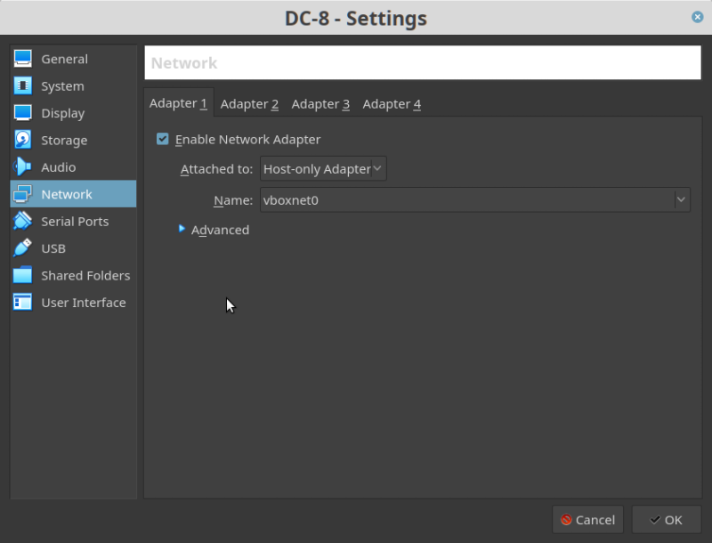
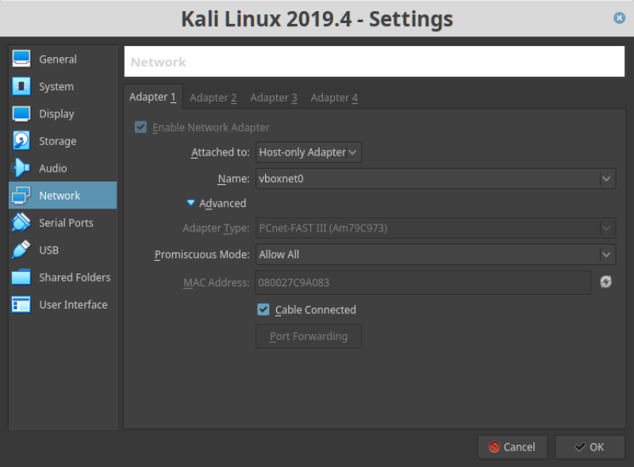
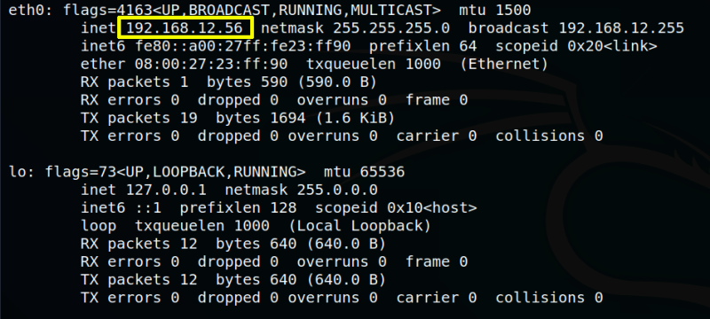
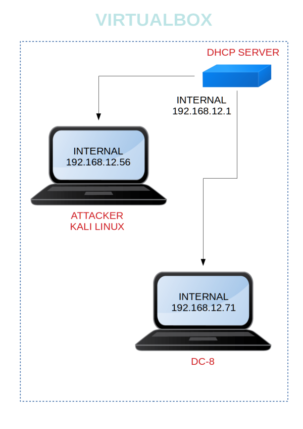

DC-8
▸ DC-8
▸ 1. Scan Network
▸ 2. Finding Services and Ports
▸ 3. Enumerate
▸ 3.1 Find SQL related Errors
▸ 3.2 Sqlmap
▸ 3.3 Directory Bruteforce using dirb
▸ 4. Exploit
▸ 4.1 Add a PHP code shell
▪ PHP-reverse shell
▸ 4.2 Netcat listener
▸ 5. Privilege Escalation
▸ 6. Capture the flag
Difficulty: Intermediate.
Flag: 1 flag.
Learning:
• netdiscover
• nmap port scan
• Browsing HTTP Service
• SQL Injection for finding Credentials
• Performing Directory Bruteforce
• Editing HTML form
• Exim Local Escalation
• Capture the flag
• Download: http://www.five86.com/downloads/DC-8.zip
• Download (Mirror): https://download.vulnhub.com/dc/DC-8.zip
• Download (Torrent): https://download.vulnhub.com/dc/DC-8.zip.torrent
Install the machine on VirtualBox:
1. Download the file and extract it.
2. On Virtualbox choose File->Import Appliance.
3. Select the file “ova”.
4. Accept to import.


Watch your Machine IP.
Output:

Diagram
 Index
Index